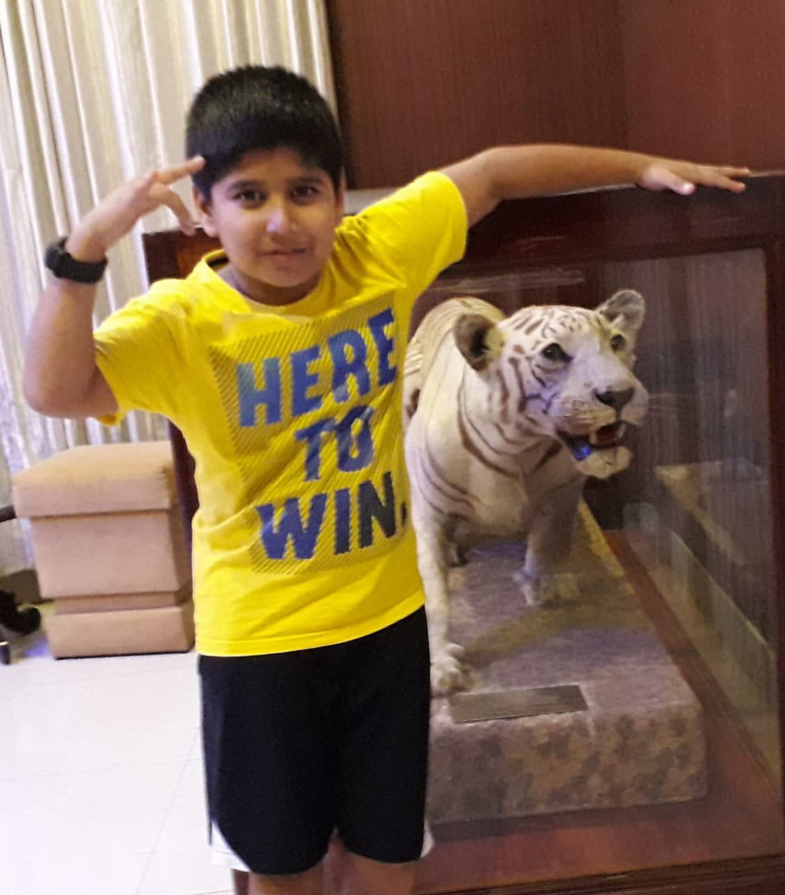

INDIAN TOURISM

Importance
India is a country of infinite landscapes, rich and diverse cultural heritage and varied fauna and flora. Every corner of the country has innumerable untold stories to be explored. It is a paradise for the tourists to satisfy their adventurous and spiritual calling.
Tourism in India is the worlds largest and fastest growing industry. It provides a significant amount of foreign exchange and employment. The World Travel and Tourism Council calculated that tourism generated ₹16.91 lakh crore or 9.2% of India's GDP in 2018 and supported 42.673 million jobs which is 8.1% of its total employment. Growth in the tourism sector directly contributes towards improvement in the infrastructure, roads, means of travel and hotel industry. Steps are being taken
to encourage and attract both domestic and foreign tourists. Various plans and projects are being carried out to promote rural, cruise, medical and eco tourism.
Types of Tourism
1. Adventure Tourism
Adventure Tourism is a type of tourism involving travel to remote or exotic locations in order to take part in physically challenging outdoor activities.
2. Cultural Tourism
Cultural Tourism is movement of people for cultural motivations such as study tours, performing arts and cultural tours.
3. Medical Tourism
Medical tourism is a type of tourism which refers to people travelling abroad to obtain medical treatment.
4. Wildlife Tourism
Wildlife tourism is a type of tourism which can be broadly defined as trips to destinations with the main purpose of visit being to observe the local fauna.
Quiz
Test your knowledge about Indian Tourism
